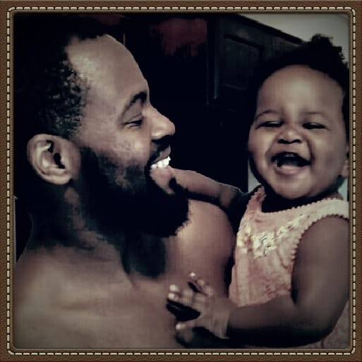

About Me
I racked my brain for a while to figure out what to write about me! None of the usual approaches seemed to make any sense.
First I thought - talk about the dark war years, sleeping in a refugee camp shack, stealing wires from the fence of the UN military base in Goma to make wireframe cars you sold to buy bread, selling water to buy bread, collecting plastic bags to make plastic bag soccer balls to sell in order to buy bread, always bread! Which sometimes I sold on the way home to get money to buy more bread. Bread, bread, bread! Obviously this wasn't working.
Then I thought - talk about the road to Rio, becoming a Taekwondo champion, making the national team, training and traveling to tournaments on a budget, sleeping on benches in airports - Mexico City, Eindhoven, O'Hare, MIA - always with your gear bag for a pillow. Oh, and the time you almost didn't make weight in Edinboro, damn fish and chips! and how the Olympics came and went and you never made it to Rio. Obviously that wasn't working either.
I imagined my my English teachers squirming reading these long meandering sentences with a million comas!
Then I went to open my phone and I saw her! My pride and joy!
Suddenly, it hit me like a burst of light.
Some events in our lives are like black holes. They suck in everything with such force that no experience, before or after their arrival, escapes their pull. But, thank goodness, there are other experiences that shrink our black holes' event horizons, lighting up our lives like we no longer thought possible.
Here I am wireframing webpages to make money to buy bread. But nothing is as it was. I am a father now and these are the bright busy years.